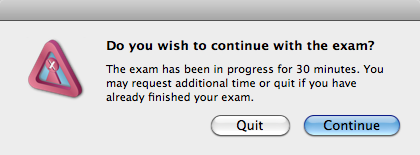

Completing the exam is simple and requires that you quit Remote Proctor, either through the Remote Proctor > Quit menu item or by pressing Command + Q. You will be prompted with a confirmation dialog before being able to quit Remote Proctor. There may be a small delay while Remote Proctor exits to ensure the exam has been finalized.
Each exam has an expected amount of time to be completed, an amount determined by the teacher. If this time were to run out, you will be presented with the following message (note that the time will likely be different):

You may choose do either of the following: